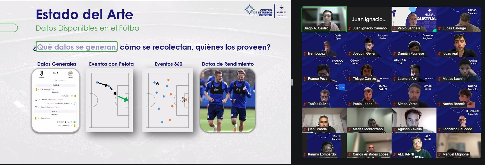
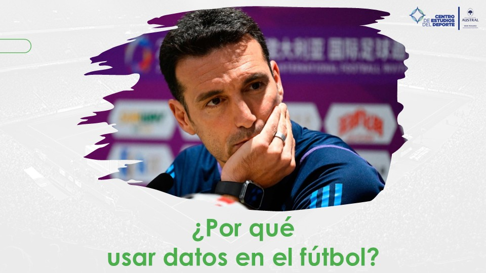

Programa en Análisis de Datos Aplicados al Fútbol - Univ. Austral

Mayo 2025 - Clase para el Programa en Análisis de Datos Aplicados al Fútbol, organizado por el Centro de Deportes de la Universidad Austral y dirigido por Pablo Sarinelli. Dicté la primera clase sobre Introducción al Análisis de Datos - Hasta dónde podemos llegar, buscando contar cómo otras industrias aprovechan los datos y cómo el fútbol podría potenciarse al seguir el mismo camino.
